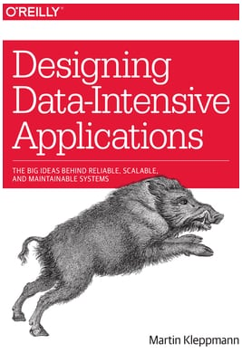

Career Bootcamp
Resources
Introduction
To read (couple of good tips can be found here):
Behavioral Questions
- Talk about a time when you had to work closely with someone whose personality was very different from yours.
- Give me an example of a time you faced a conflict while working on a team. How did you handle that?
- Describe a time when you struggled to build a relationship with someone important. How did you eventually overcome that?
- We all make mistakes we wish we could take back. Tell me about a time you wish you’d handled a situation differently with a colleague.
- Tell me about a time you needed to get information from someone who wasn’t very responsive. What did you do?
- Have you ever had a deadline you were not able to meet? What happened? What did you do?
- Talk about a time where you had to make an important decision quickly. What did you decide? What were the results?
- Have you ever been in a business situation that was ethically questionable? What did you do?
- Talk about a time when a co-worker was not doing their share on a project. How did you handle it?
- Talk about a time when you’ve had to sell an idea to your colleagues.
To read:
System Design
- Design URL Shortening service like TinyURL (Solution 1, Solution 2)
- Designing Instagram (Example 1), Sound Recording of the Meeting
- To-Do App (server + client side)
To read:
- Grokking the System Design Interview (Educative)
- Microservices
- Relational vs. non-relational databases
Books:
Resume Writing
How to talk about the career gap confidently:
- How to List Gaps on a Resume
- How To List Your Work Experience on Your Resume
- How to Explain Your Employment Gap Without Hurting Your Chances of Getting the Job
To listen:
-
Awesome meetup on mindset for interview/coding assignment preparation by Geeta Chaudhry
"She gave a lot of good advises on how to approach the avalanche of problems and how to deal with impostor syndrome. She emphasizes the need to assimilate the problem versus just to solve it yourself once. Assimilation is when you solved it few times to the point that you have mechanical memory of how to approach it including border conditions etc. There is only one way to know if you assimilated it or not. Keep trying to solve it few times 2-3 days apart. She also suggest to do various topics in parallel. For example take "Elements of programming interview" book and pick 1 intermediate problem, 1 hard problem from each chapter and here you go - your first set of problems to assimilate and you need to do them in parallel. Let's say you have 10 hours a week, spend 1 hour per each problem each week, repeat until a problem is fully assimilated. Once you assimilated 75-100 problems you are ready for an interview" – Sabina Nord.
To watch:
The tools:
Additional materials to consider while preparing for the interview
Interview questions sorted by company on LeetCode:
- Google Online Assessment Questions
- Google | Onsite interview questions
- Amazon Final Interview Questions | SDE1
To practice:
- Top 10 Algorithms for Coding Interview
- Hundreds of (paid) videos explaining whiteboarding/coding question
- Free daily coding interview practice
- List of questions sorted by common patterns
- Topics and problems with solutions
- LeetCode Solutions and Explanations
- 60 LeetCode problems to solve for coding interview
To read/watch:
- 14 Patterns (Visualization)
- Leetcode Patterns
- Want to Crack Leetcode Problems Easily?
- Five things I have learned after solving 500 Leetcode questions (To read for inspiration)
- Amazing videos for the Algorithms and Data Structures
Courses:
- Leetcode Questions Solutions Explained (Udemy)
- Udemy course for interview prep. You can find anything you need here (not Python though, mostly Java and sometimes C++, but very well explained foundations)
Books:
Programs to Apply
-
Upwardly Global
For immigrants and refugees who want too restart their professional careers in the United States. The program provide resources for free such as premium LinkedIn account, business accounts for Udemy, Coursera, mentoring, mock interviews by volunteers from different companies, networking, etc. They do have some eligibility requirements. -
Techtonica
The program is helping women and non-binary adults overcome barriers into the tech industry (provides internship). - Path Forward
-
About AWS re/Start program, Apply to AWS re/Start
AWS re/Start is an initiative for unemployed or underemployed individuals who would like to redirect their professional path into tech. It's a 12-week cloud training in AWS delivered through their partners around the world. It's connected with guidance in working on CV and interview preparations.